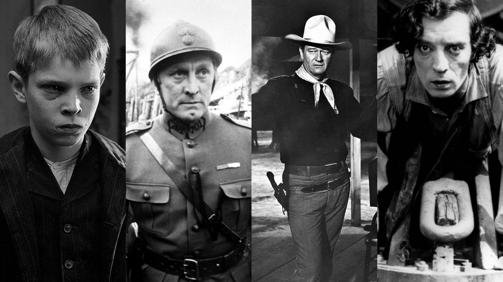
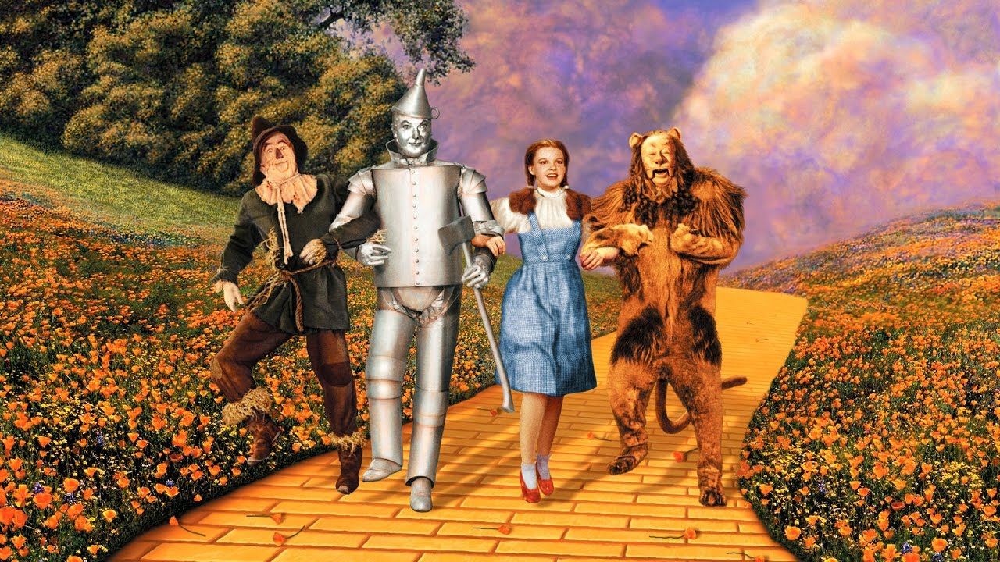
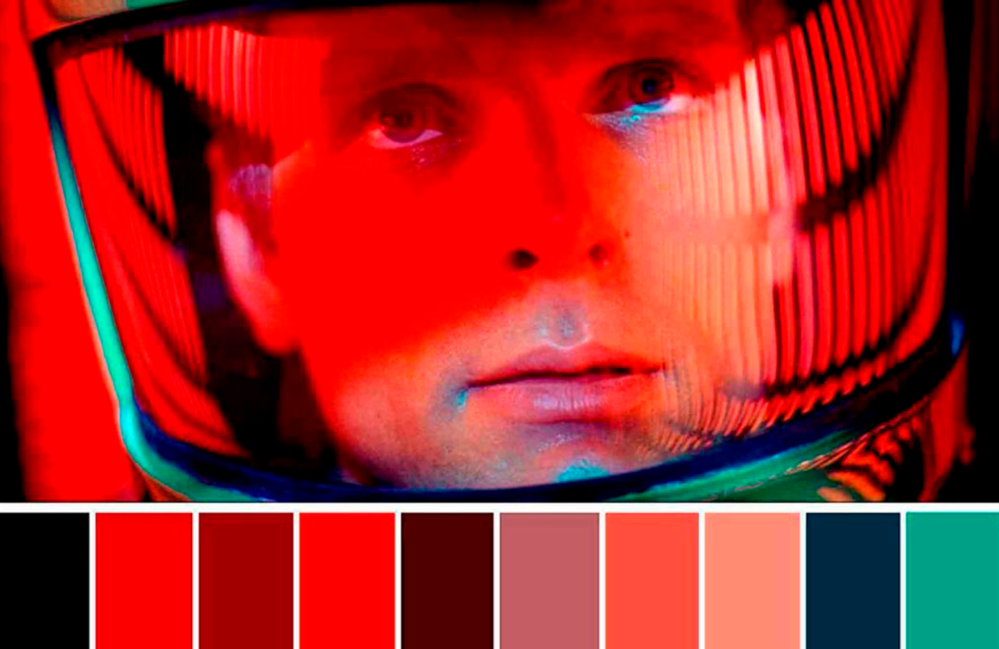

Francisco Verde
El cine es el arte contemporáneo que tiene la capcidad de convocar y reunir a nivel mundial a más público en torno a un mismo tema para vivir una experiencia estética, y aunque cada día este arte se nos presenta de manera más sofisticada, porque sigue evolucionando al aprovechar todos los recursos técnicos de nuestra época para contar nuevas historias, siempre hay momentos en los cuales los realizadores deben regresar a los principios más primitivos de este oficio para poder comunicarnos más efectivamente algun mensaje.
Al hablar del color como elemento de expresión visual en el cine, deberiamos hablar de todo los aspectos que presuponen el estudio del arte de la fotografía, y uno de esos aspectos son los principios de expresión en la LA PINTURA. Antes que el Cine fuese a Color, es decir cuando era en "Blanco y negro", el efecto de la luz estaba pautado por el correcto uso de los tonos, la llamada escala de valores, aprovechando los grise para proyectar una sensación realista y naturalista de las formas y de la atmósfera de la imagen que se comunicaba, asi como el pintor lo hacía y lo hace con el Claroscuro.
Luego con la llegada del color a la fotografía, el cine Dio un nuevo salto avolutivo, sobre todo en la exploración de diversas "paletas" o "armonías" cromaticas que le permitía conseguir el celuloide, logrando así mejorar diversas sensaciones, se optimizó la percepción de los materiales, texturas, profundidades, volúmenes, e incluso yendo más allá de los sensorial , haciéndonos sentir diversas emociones como alegría, terror, tristeza, melancolía, angustia, misterio, incluso si un realizador quería dar la sensación de alguna época específica pre-fotográfica en la historia, generalmente recurrían al estudio de las obras pictóricas de esa época y planteaban su fotografía inspirada en esa paleta de colores, para conectar más fácilmente al público de la generación presente con ese momento histórico , ya que esas obras de arte son las referencias y el imaginario más poderoso con las que se ha contado.
En la actualidad con la llegada del mundo digital, el cine Dio nuevos saltos en muchos aspectos, sobre todo en la implementación de recursos para lograr efectos visuales cada día más convincentes, y las nuevas tecnologías y técnicas para captar el color y trabajarlo posteriormente a través de diversos softwares, nos otorgan posibilidades infinitas.
Se han comenzado a usar colores más intensos, más saturados y más luminosos, como los cadmios, podemos apreciar negros más profundos en las sombras, incluso podemos disfrutar de colores neón en las producciones, paletas de colores más experimentales de aspecto cromado, o traslúcidas. Todos estas aproximaciones al mundo del color hubiesen sido impensables con las tecnologías anteriores, por eso, algunas viejas producciones han podido encontrar una nueva vida en la actualidad al someterse a procesos de enriquecimiento digital integrales, para mejorar la imagen y el sonido.
El color en el cine, al igual que en el resto de las artes visuales es un elemento de expresión estética, y aunque su uso siempre estará sujeto a la voluntad del realizador, su "correcto" uso, se evidenciará cuando a través de él se logra comunicar fidedignamente la intención del autor, lo cual no dependerá de la tecnología que esté posea o domine y los conocimientos técnicos que maneje, si no del conocimiento que el realizador tenga de los principios y las teorías del color que existen hasta hoy.